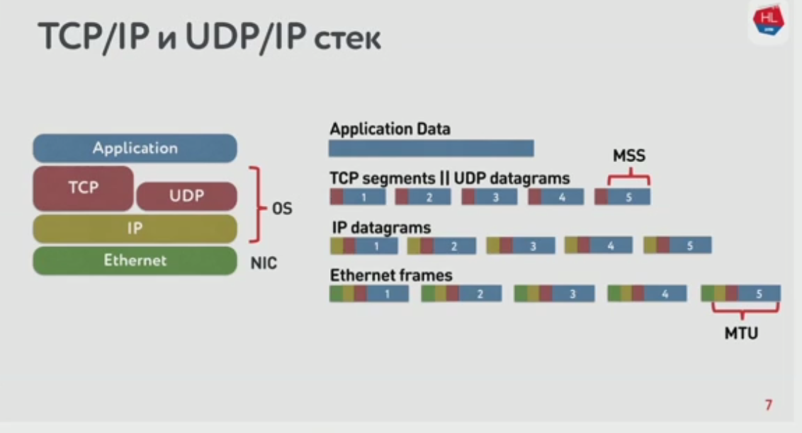

Сетевые модели(стеки протоколов)
OSI
OSI - формальная, теоретическая сетевая модель
- Уровень приложений: данные; доступ к сетевым службам, (HTTP, FTP, SMTP, RDP, SNMP, DHCP)
- Уровень представления данных: данные; представление и шифрование данных (ASCII, EBCDIC)
- Сеансовый уровень: данные; управление сеансом связи (RPC, PAP)
- Транспортный уровень: сегменты / дейтаграммы; прямая связь между конечными пунктами и надёжность (TCP, UDP, SCTP, PORTS)
- Сетевой уровень: пакеты; определение маршрута и логическая адресация (IPv4, IPv6, IPsec, AppleTalk)
- Канальный уровень: биты / кадры; физическая адресация (PPP, IEEE 802.22, Ethernet, DSL, ARP, L2TP, Network Cards)
- Физический уровень: биты; Работа со средой передачи, сигналами и двоичными данными (USB, кабель ("витая пара", коаксиальный, оптоволоконный), радиоканал)
7 — протокол прикладного уровня (Application layer)
- взаимодействие сети и пользователя
- уровень разрешает приложениям пользователя иметь доступ к сетевым службам, таким, как обработчик запросов к базам данных, доступ к файлам, пересылке электронной почты
- отвечает за передачу служебной информации, предоставляет приложениям информацию об ошибках и формирует запросы к уровню представления
6 — уровень представления (Presentation layer)
- передаваемая информация не меняет содержания
- преобразование данных
- преобразование между различными наборами символов
- сжатие данных для увеличения пропускной способности канала
- шифрование и расшифрование
5 — сеансовый уровень (Session layer)
- уровень управляет созданием/завершением сеанса, обменом информацией, синхронизацией задач, определением права на передачу данных и поддержанием сеанса в периоды неактивности приложений
- синхронизация передачи обеспечивается помещением в поток данных контрольных точек, начиная с которых возобновляется процесс при нарушении взаимодействия
4 — транспортный уровень (Transport layer)
- предоставляет сам механизм передачи
- блоки данных он разделяет на фрагменты, размеры которых зависят от протокола: короткие объединяет в один, а длинные разбивает
- протоколы этого уровня предназначены для взаимодействия типа точка-точка
- протоколы транспортного уровня часто имеют функцию контроля доставки данных, заставляя принимающую данные систему отправлять подтверждения передающей стороне о приеме данных
- отвечает за восстановление порядка данных при использовании сетевых протоколов без установки соединения
3 — сетевой уровень (Network layer)
- предназначается для определения пути передачи данных
- трансляцию логических адресов и имён в физические
- определение кратчайших маршрутов, коммутацию и маршрутизацию, отслеживание неполадок и заторов в сети
- На этом уровне работает такое сетевое устройство, как маршрутизатор.
- типы:
- Протоколы с установкой соединения начинают передачу данных с вызова или установки маршрута следования пакетов от источника к получателю. После чего начинают последовательную передачу данных и затем по окончании передачи разрывают связь.
- Протоколы без установки соединения посылают данные, содержащие полную адресную информацию в каждом пакете. Каждый пакет содержит адрес отправителя и получателя. Далее каждое промежуточное сетевое устройство считывает адресную информацию и принимает решение о маршрутизации данных. Письмо или пакет данных передается от одного промежуточного устройства к другому до тех пор, пока не будет доставлено получателю. Протоколы без установки соединения не гарантируют поступление информации получателю в том порядке, в котором она была отправлена, так как разные пакеты могут пройти разными маршрутами.
2 — канальный уровень (Data Link layer)
- получение доступа к среде передачи
- выделение границ кадра (резервирование некоторой последовательности, обозначающей начало или конец кадра)
- Аппаратная адресация (или адресация канального уровня). Требуется в том случае, когда кадр могут получить сразу несколько адресатов. В локальных сетях аппаратные адреса (MAC-адреса) применяются всегда.
- обеспечение достоверности принимаемых данных. Во время передачи кадра есть вероятность, что данные исказятся. Важно это обнаружить и не пытаться обработать кадр, содержащий ошибку. Обычно на канальном уровне используются алгоритмы контрольных сумм, дающие высокую гарантию обнаружения ошибок.
- в программировании доступ к этому уровню предоставляет драйвер сетевой платы
- на этом уровне работают коммутаторы, мосты
- 2 подуровня
- LLC (Logical Link Control) обеспечивает обслуживание сетевого уровня
- MAC (Media Access Control) регулирует доступ к разделяемой физической среде
- выступает в качестве интерфейса между подуровнем LLC и физическим (первым) уровнем
- обеспечивает адресацию и механизмы управления доступом к каналам, что позволяет нескольким терминалам или точкам доступа общаться между собой в многоточечной сети
- эмулирует полнодуплексный логический канал связи в многоточечной сети
1 — физический слой (physical layer)
- физическая и электрическая среда для передачи данных
- способы передачи бит через физические среды линий связи, соединяющие сетевые устройства
- описываются параметры сигналов, такие как амплитуда, частота, фаза, используемая модуляция, манипуляция
- решаются вопросы связанные с синхронизацией, избавлением от помех, скорости передачи данных
TCP/IP
TCP/IP — сетевая модель выведенная из практического использования(в отличии от OSI).

4 — Прикладной уровень
- протоколы работают поверх TCP или UDP и привязаны к определённому порту
- порты определены Агентством по выделению имен и уникальных параметров протоколов
- протоколы: Echo, Finger, Gopher, HTTP, HTTPS, IMAP, IMAPS, IRC, NNTP, NTP, POP3, POPS, QOTD, RTSP, SNMP, SSH, Telnet, XDMCP.
3 — Транспортный уровень
- в стеке TCP/IP транспортные протоколы определяют, для какого именно приложения предназначены эти данные
- протоколы
- TCP (IP идентификатор 6) — «гарантированный» транспортный механизм с предварительным установлением соединения, предоставляющий приложению надёжный поток данных, дающий уверенность в безошибочности получаемых данных, перезапрашивающий данные в случае потери и устраняющий дублирование данных. TCP позволяет регулировать нагрузку на сеть, а также уменьшать время ожидания данных при передаче на большие расстояния. Более того, TCP гарантирует, что полученные данные были отправлены точно в такой же последовательности.
- UDP (IP идентификатор 17) — протокол передачи датаграмм без установления соединения. Также его называют протоколом «ненадёжной» передачи, в смысле невозможности удостовериться в доставке сообщения адресату, а также возможного перемешивания пакетов. В приложениях, требующих гарантированной передачи данных, используется протокол TCP. С другой стороны, благодаря такой неизбирательности и бесконтрольности, UDP доставляет пакеты данных (датаграммы) гораздо быстрее, потому для приложений, которые рассчитаны на широкую пропускную способность и быстрый обмен, UDP можно считать оптимальным протоколом. К таковым относятся сетевые и браузерные игры, а также программы просмотра потокового видео и приложения для видеосвязи (или голосовой). Также по udp обычно доставляется статистика в хайлод проектах.
- И TCP, и UDP используют для определения протокола верхнего уровня число, называемое портом.
2 — Сетевой (межсетевой) уровень
- изначально разработан для передачи данных из одной сети в другую
- на этом уровне работают маршрутизаторы, которые перенаправляют пакеты в нужную сеть путем расчета адреса сети по маске сети
- пакеты сетевого протокола IP могут содержать код, указывающий, какой именно протокол следующего уровня нужно использовать, чтобы извлечь данные из пакета. Это число — уникальный IP-номер протокола. ICMP и IGMP имеют номера, соответственно, 1 и 2
- протоколы: DVMRP, ICMP, IGMP, MARS, PIM, RIP, RIP2, RSVP
1 — Канальный уровень
- описывает способ кодирования данных для передачи пакета данных на физическом уровне
- канальный уровень иногда разделяют на 2 подуровня — LLC и MAC
- канальный уровень описывает среду передачи данных
- на канальном уровне рассматривают помехоустойчивое кодирование — позволяющие обнаруживать и исправлять ошибки в данных вследствие воздействия шумов и помех на канал связи
OSI vs TCP/IP